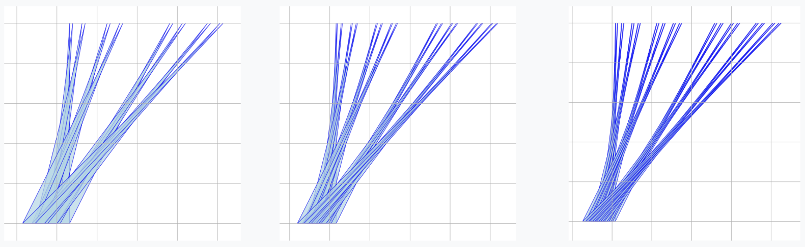
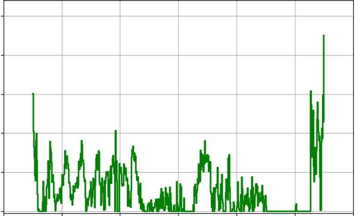

AlphaProof turned a Deep Think natural-language proof of an AlphaEvolve-discovered result into a fully formal Lean proof using Mathlib.
Abstract
AlphaEvolve (Novikov et al., 2025) is a generic evolutionary coding agent that combines the generative capabilities of LLMs with automated evaluation in an iterative evolutionary framework that proposes, tests, and refines algorithmic solutions to challenging scientific and practical problems. In this paper we showcase AlphaEvolve as a tool for autonomously discovering novel mathematical constructions and advancing our understanding of long-standing open problems. To demonstrate its breadth, we considered a list of 67 problems spanning mathematical analysis, combinatorics, geometry, and number theory. The system rediscovered the best known solutions in most of the cases and discovered improved solutions in several. In some instances, AlphaEvolve is also able to generalize results for a finite number of input values into a formula valid for all input values. Furthermore, we are able to combine this methodology with Deep Think and AlphaProof in a broader framework where the additional proof-assistants and reasoning systems provide automated proof generation and further mathematical insights. These results demonstrate that large language model-guided evolutionary search can autonomously discover mathematical constructions that complement human intuition, at times matching or even improving the best known results, highlighting the potential for significant new ways of interaction between mathematicians and AI systems. We present AlphaEvolve as a powerful new tool for mathematical discovery, capable of exploring vast search spaces to solve complex optimization problems at scale, often with significantly reduced requirements on preparation and computation time.
Problem
Many open problems in analysis, combinatorics, geometry and number theory reduce to finding explicit constructions that optimize a quantitative bound. These are traditionally pursued problem-by-problem with heavy expert effort.
Approach
AlphaEvolve, an LLM-driven evolutionary coding agent, mutates programs that produce candidate constructions and scores them with user-supplied evaluators. It was applied to 67 problems. In some cases Deep Think generalized the findings into proofs. In one instance AlphaProof converted such a proof into a fully formalized Lean proof, which was feasible only when the needed steps already existed in Mathlib.
Results
AlphaEvolve rediscovered the best known constructions for most problems and improved the state of the art for several, sometimes extrapolating finite cases to general formulas. It also demonstrated one end-to-end pipeline from discovery to Lean formalization. Ablations show trade-offs between parallelism, LLM cost and discovery speed.

Figure 8. Triangle constructions towards minimizing total area for n=16,32,64 (left, middle and right): (Top) Keich’s method and (Bottom) AlphaEvolve ’s constructions. More examples are provided in the Repository of Problems .

Figure 3. Left: the constructions produced by AlphaEvolve for Problem 6.2 , Right: their autoconvolutions. From top to bottom, their scores are 1.5053 , 1.5040 , and 1.5032 (smaller is better).